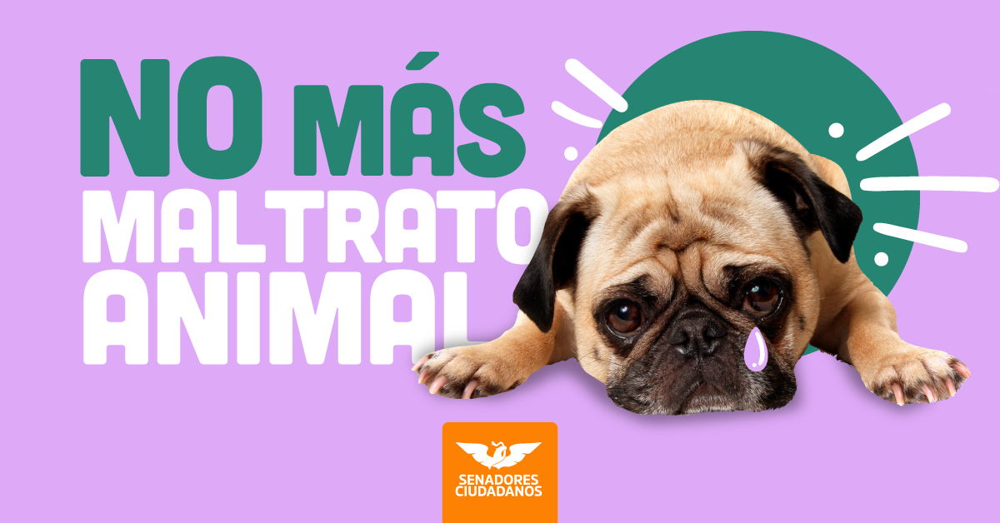

Denuncia al maltrato animal!!!
No al Maltrato animal
El maltrato animal es considerado como todo hecho, acto u omisión del ser humano, que puede ocasionar dolor o sufrimiento afectando el bienestar animal, poner en peligro la vida del animal o afectar gravemente su salud, así como la sobreexplotación de su trabajo. Sin embargo, esta definición puede cambiar en cada estado, dependiendo de sus legislaciones locales.

Cuida a los animales
Di no al maltrato animal
Di no al maltrato animal
Denuncia
Si conoses algun caso de maltrato animal, denuncialos, ayuda a hacer que una mascota no sufra, solo tienes que rellenar un formulario con alguno de tus datos, y describir el caso de maltrato que estas denunciando.
Para denunciar da click en este recuadro.
Denuncia Anonima
Tal vez conscas algun caso de maltrato animal el cual quieres denunciar, pero no quieres que se sepa quien lo denuncio. No temas denuncia anonimamente, solo describenos el caso de violencia que deseas denunciar y listo, recuerda que no importa si denuncias normalmente o anonimamente, lo importante es no permitir el maltrato animal.
Para denunciar da click en este recuadro.